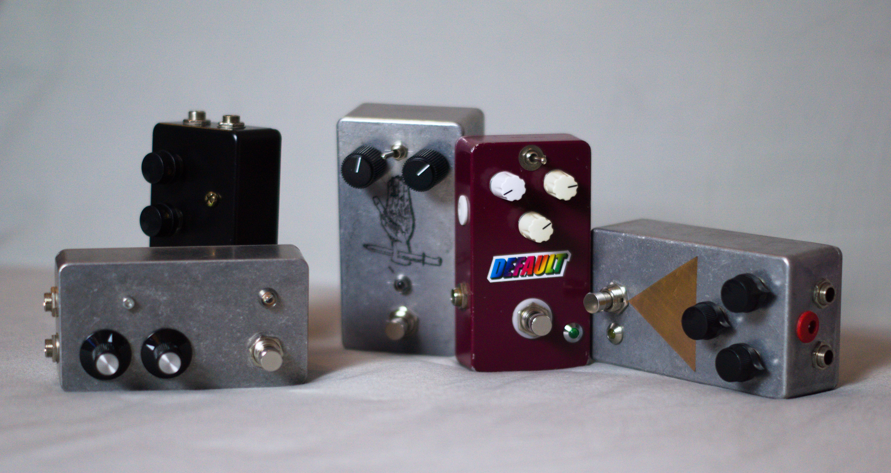

Reparatur und Bau von Effektgeräten
Wenn die Distortion nicht mehr funkioniert und das Delay nicht mehr verzögert, sind wohl Reparaturen fällig.
Auch Nachbauten populärer Schaltungen biete ich an - einfach unverbindlich anfragen.
Wenn die Distortion nicht mehr funkioniert und das Delay nicht mehr verzögert, sind wohl Reparaturen fällig.
Auch Nachbauten populärer Schaltungen biete ich an - einfach unverbindlich anfragen.
Als Band stellen sich vor jeder Tour Fragen zur technischen Umsetzung des im Studio mühevoll entwickelten Sounds oder einfach nur zur Logistik.
Als tourerfahrener Multiinstrumentalist und leidenschaftlicher Tüftler biete ich auch hier meine Hilfe an.